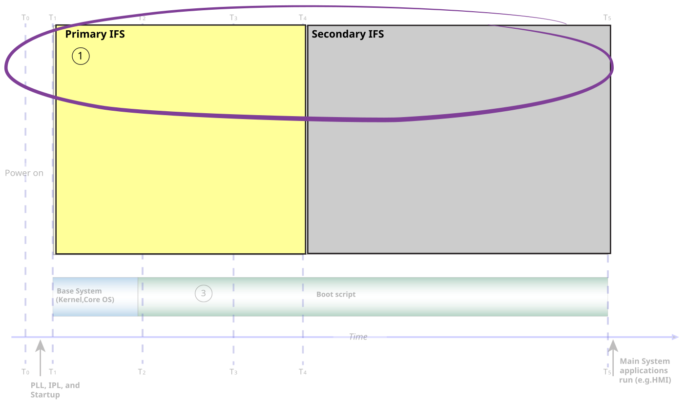

To start up as soon as possible, we recommend that you include only the necessary
files (libraries, configuration files, device drivers, binaries, etc.) in the primary IFS.
In general, the fewer components that you have in your IFS, the faster your system
can boot. Hence, if there are files that aren't required in an IFS, consider putting
them in a filesystem that's mounted by the primary IFS. For example, if you have
files that aren't required for a splash screen application to run, but must be
loaded into RAM, you should put them into the secondary IFS. For more information
about creating an IFS, see the OS Images
chapter in Building Embedded
Systems and the mkifs
entry in the QNX OS
Utilities Reference guide.
Since the kernel,
Screen, and splash screen
application (if applicable) won't run until the IPL copies the primary IFS from
flash memory into RAM, the smaller you make the IFS, the faster the copy operation
is, and the sooner those components can begin to run. For information about the
IPL, see
About the System Startup Sequence.
Figure 1. Configure a primary and a secondary IFS on the system.

Here's a general guideline of what to put into the primary and secondary IFSs to
optimize the boot time:
- Primary IFS
- Include the kernel,
Screen service, and the splash screen
application (if applicable), configuration files, and any other components
that must be available (e.g. display drivers). For example, if your system
requires networking or video from a camera, you'll need to include those
binary files in your primary IFS. For general guidelines of what to include
in the primary IFS, see
Minimum files to load to run Screen
later in this chapter.
- Keep the size of the primary IFS small. If you have a splash screen
application, optimize it to use as few libraries, resources, and device
drivers as possible. Since the required libraries are specific to how
optimized your application is, see the
Optimize the splash screen application
chapter
for more optimization techniques.
Note: The binaries required for
Screen are
listed in the sample buildfile of the Board Support Package (BSP).
To find the BSP for your board, see
BSPs from our
download
site.
- Secondary IFS
- Include the files
(libraries, configuration files, other applications) for the components that
run after Screen and any applications you
start in the primary IFS. For information about Screen-related libraries that can be candidates to
load in the secondary IFS, see the
Board-specific Screen libraries that can be loaded later
section later in this chapter.
Below is the suggested minimum set of files (excluding any dependencies)
to include in the primary IFS to run
Screen:
- the Screen resource manager binary
(screen)
- the Screen API (libscreen.so)
- the memory manager used by Screen
(libscrmem.so and libmemobj.so)
- the Screen configuration file
(graphics.conf)
- the memory buffer allocator for the hardware board
(screen-<name>.so shared
object, where name is the name specified in the
alloc-config property in the
graphics.conf file. Typically, name
includes the name of your hardware platform (e.g., imx6xbuf). For information
about the file name, see the
Determine the name of the board-specific memory buffer file
section later in this chapter.
Files for splash screen application
If you're running a splash screen application, then in addition to the files listed
above, include the following files (dependencies excluded) in the primary IFS:
- the display driver library (libWFD.so)
- the minimum board-specific libraries and display drivers. To understand how to
determine the files to include, see the
Determine the board-specific libraries to include
section
later in this chapter. If you have any custom drivers for your board, you should
also include them in the primary IFS.
- the splash screen application binaries and any files and libraries that
the application uses. For example, if you want to show content from a PNG image
file, in addition to the application binaries, you should include:
Determining dependencies
You can run the
objdump_variant (e.g.,
ntoaarch64-objdump or
ntox86_64-objdump)
utility on your host to determine any dependencies that the above list of files has.
For more information, see
objdump
in the
QNX OS
Utilities Reference guide. For example, you can use this command to
determine the list of dependencies:
objdump -x | grep NEEDED
Alternatively, you can set the environment variable
LD_DEBUG=lib to show the
Screen dependencies.
Statically linking libraries
For some libraries, you can choose to statically link them with your splash screen
application. For example, you could statically link the PNG library required to
decode your splash screen image. For more information on this technique, see Use statically linked libraries section in the Optimize the splash screen application chapter.